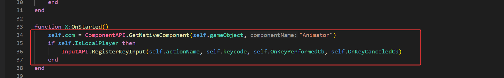
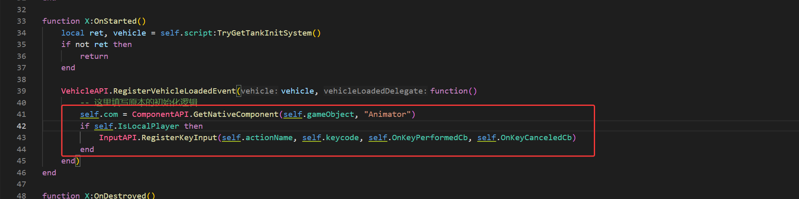

22.5.6 载具时序 Vehicle Initialization Timing
如果 Lua 脚本直接挂载在载具上，请勿在 OnStarted 中直接运行初始化代码。
If your Lua script is attached directly to a vehicle, do not run initialization code directly in OnStarted.
客户端 API 2 起 From API 2
客户端 API 2 起（见 22.7 Lua API 2 概览），把初始化代码写进 OnVehicleReady 即可。游戏会在载具装配完成后调用它一次；如果脚本运行时载具已经装好，它会紧接在 OnStarted 之后调用。
From client API 2 on (see 22.7 Lua API 2 Overview), write your initialisation code into OnVehicleReady. The game calls it once after the vehicle has been assembled; if the vehicle is already assembled when the script runs, it is called immediately after OnStarted.
function MyBehavior:OnVehicleReady(vehicle)
-- 这里填写原本的初始化逻辑
-- Your initialization code goes here
end
老客户端 Older Clients
下面的写法适用于没有 API 2 的老客户端。
The following approach applies to older clients without API 2.
请先注册一个加载回调，如下方式：
Register a loaded callback first, like this:
local ret, vehicle = self.script:TryGetTankInitSystem()
if not ret then
return
end
VehicleAPI.RegisterVehicleLoadedEvent(vehicle, function()
-- 这里填写原本的初始化逻辑
end)
修改前：
Before:

修改后：
After:

这样可以确保在载具完全加载完成后，再执行你的代码。
This guarantees that your code only runs after the vehicle has fully finished loading.